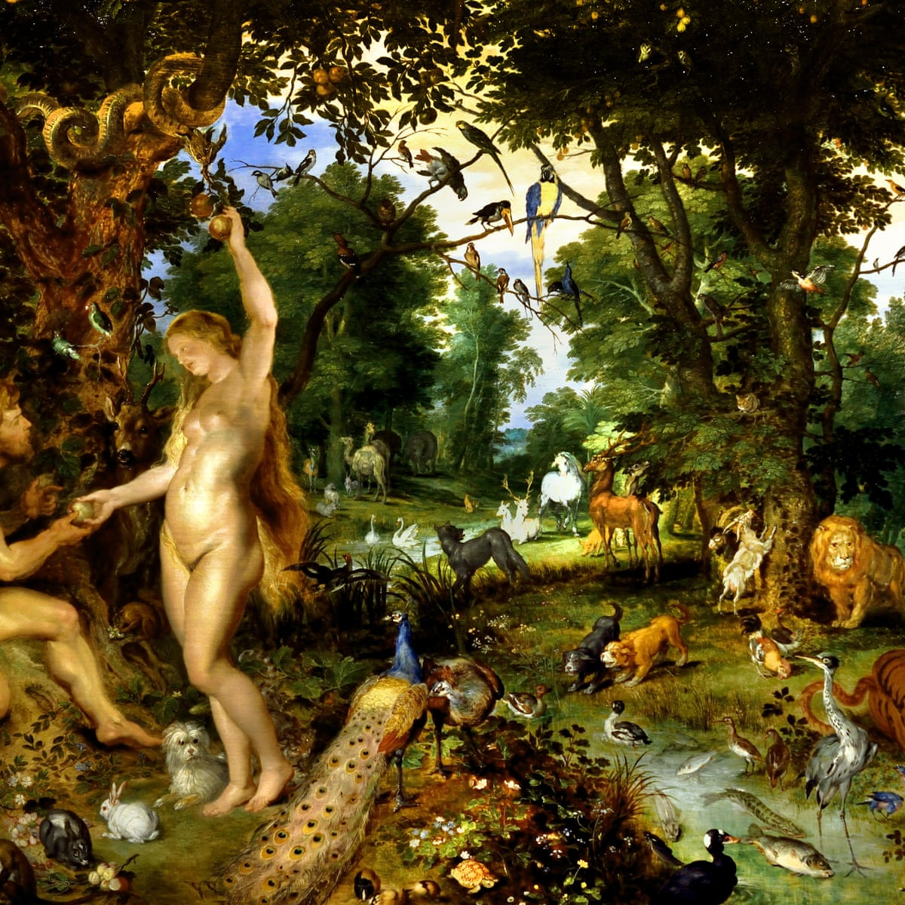

Secret World Religion
Unbelievable exposing of the Secret Society that runs the world.
I will write more about this later, but for now, just watch.
I believe a lot of people have never learned about what luciferianism (or satanism) really is. Please correct me if I'm wrong about any of this.
First, the backstory:
The biblical story of the Devil is that Lucifer was God's best angel. Lucifer was the most beautiful, and the most intelligent, etc. He was also the most proud. He thought he could do even better than God himself, his Creator, The Creator. So, He convinced 1/3 of all angels to join his cause in overthrowing God. There was a war in heaven. On God's side was Archangel Michael, who fought against Lucifer and his army in heaven. Lucifer transformed himself into a dragon during the fight and was still defeated by Archangel Michael.

Lucifer was expelled from heaven and fell down to Earth as a bolt of lightning, along with the rest of his fallen angels. 1/3 of Angels is 33%. That is the occult significance of the number 33, and probably why the freemasons chose that as their final level. God said from that moment that Lucifer would be known as Satan, or the Devil.
The Devil and his Fallen Angels now rule over the Earth, because they were kicked out of heaven. There was also a great pit, and I'm honestly not sure how long the devil stayed down there. But I'm pretty sure he and the rest of his army have dominion here.
Jesus, later on in the Bible, Lives on Earth and is tempted by the Devil who takes him to a mountain and shows him the 4 corners of the Earth and offers it all to him. Jesus just quotes scripture to him and does not fall for his tricks, nor does he challenge the devil's claim that he owns the four corners of the Earth, implying that it is true.
Jesus repeatedly says his kingdom is not of this world, during his time on Earth.
In the story of Adam and Eve and the Garden of Eden, Satan is the snake in the garden that tells eve to eat from the tree of knowledge of good and evil that God forbid.
See, God put mankind into a garden of paradise, with the devil and 2 trees, 1 of eternal life, and 1 of the knowledge of good and evil. He forbid them to eat from either tree. The Devil as a snake convinces Eve to eat from the tree of knowledge of good and evil. She takes a bite of the apple and then convinces Adam to do the same. He doesn't take much convincing. Then God finds out because they start acting differently and covering themselves up and hiding, whereas before they didn't even realize they were naked. God then places a flaming sword (of judgment) in front of the tree of everlasting life, and curses the snake to have to slither around (it had legs) and the man to have to work and worry about the future, and the woman to have painful childbirth and to be dependant on her man.
God basically puts Man in a position where he has free will to choose. God also gives man commands of what to do and what not to do. (Also a conscience). Lucifer argues that Man should not listen to God's restrictions. Man should be like God.
I don't know if the Snake from the Garden of Eden precedes Lucifer's war in heaven, but I think that probably makes to most sense. Like God put the snake in the Garden, then it eventually became lucifer, and then became the Devil Again. I don't know.
The point is that some people, luciferians, believe in Lucifer's cause. They view God as a dictator, and they view Lucifer as a revolutionary. Lucifer, the light bringer, an angel of light, brought knowledge to Mankind at his own expense. From this point of view, It was Lucifer who sacrificed himself for our salvation, not Jesus. It was Lucifer who brought us the knowledge of Good and Evil, and it is God who restricts us and prevents us from becoming like him. Reminds me of the story of Zeus, who was terrified of Human Beings' power when they had two heads and two bodies, so he split them into male and females so they would spend their time seeking their other halves instead of threatening his reign.
Okay, so Lucifer gave man the knowledge of Good and Evil, and God cast him out of heaven for it. But what is the knowledge of Good and Evil, truly?
Well, Nietzche wrote a book called "Beyond Good and Evil" with the most brilliant critique of Christianity of all time. And I will explain it to you because it's necessary to understand how luciferians think about morality.

Nietzsche classifies two types of morality. Slave Morality, and Master Morality.
Master Morality, he argues, was there first. When one cave man was bigger and stronger than another cave man, and bumped him over the head and stole his food, that stronger cave man saw himself as Good. What he says goes. He made his own value system. He is good at feeding himself and fighting and the other cavemen is not. The weak caveman is "bad" at feeding himself and protecting himself and getting what he wants.
Strong == Good,
Weak == Bad
That's how morality started. It wasn't Good vs. Evil straight away in people's minds. It was Good vs. Bad, the way someone is good or bad at basketball. You wouldn't say a weak basketball player was "Evil". Actually, you'd be more likely to call a good basketball player, like Michael Jordan or Kobe Bryant or Lebron James "Evil". And that's where the Slave Morality comes in.
Nietzsche believes everything comes down to a will to power. The strong cavemen has a will to power and he overpowers the weak and takes what he wants. No problem. The weaker cavemen, however, they too have a will to power to get what they want, but this will to power is repressed by the stronger men. Therefore, this repressed will to power comes out in other ways. For example, in Nietzsche's view, one day the weak caveman, after getting his dinner stolen again and his gf banged by the stronger caveman, the weak man said, "I'm not the bad man. I'm good. I'm morally superior. I wouldn't steal from others and rape others if I was that strong. You, the strong man, are EVIL, and it is I who is good." There you have it. The will to power of the slave eventually emerges and places itself on top of a new moral structure.
The Strong believe they are good, and the weak are bad, and the weak believe the weak are good, and the strong are evil.
These two conflicting moralities are paramount in the conflict between Luciferianism and Christianity.
Christianity worships and follows the teachings of Jesus Christ. Jesus said things like, "The meek will inherent the Earth". and "Blessed are the poor". Jesus glorified weakness in a sense. "Whoever humbles himself will be exalted". He inverted the morality at the time and gave the weak a way to exercise their suppressed will to power.
Luciferianism, or Satanism, worships and follows the teachings of Lucifer. Luciferians say things like, "Do as thou wilt". Lucifer values strength as good, and weakness as bad. Lucifer doesn't see the strong overpowering the weak as Evil, he sees it as Good, or at least, beyond Good and Evil. Natural.
God, on the other hand, gave his only son in an attempt to show people that humility is a virtue before God.
Nietzsche, though, would argue that humility is not a virtue, but rather a disguised attempt to overpower the strong by inverting the morality.
---
So if God says homosexuality and transgenderism and abortion are wrong, Lucifer would argue that there is no such thing as "wrong". There is only possibility, and the power to act. So if you have the power to change genders, then do it! Nothing is stopping you. Luciferianism offers freedom from God's rules. There are no rules in Luciferianism. There are procedures within the church of Satan or the ranks of freemasonry, but at the highest level -- there are no limits to what you are allowed to do to another person, or animal. Raping children is just natural to them if they want to do it and have the power to get away with it. Sacrificing children is also nothing a true Luciferianism would have a problem with.
They hate Jesus. Jesus ruins all the fun they think they're having. The Luciferians are trying to expel their guilt and justify want they do that others would call "Evil". Jesus makes them feel guilty about their evil deeds, so they absolutely hate Jesus and his teachings. They just want to rule over the weak, guilt free. They get off on violating innocence, because to them it's only ignorance.
So you see it's not some silly argument. It's very sophisticated. It's actually more sophisticated than Christianity. But the truth doesn't have to be so hard to understand. You are born with the truth, in the form of your conscience. Your sense of Right and Wrong, or Good and Evil, is divine. And you can try to get rid of it with Luciferian Philosophies, but it's still there, deep down.
So if the thought of Jesus rubs you the wrong way, that's why. We all have wickedness in us, and wickedness hates righteousness. Darkness abhors the light. Comprehends it not.
But see the Luciferians argue that God is the Darkness, and Lucifer brings the light of the knowledge of Good and Evil.
So you have to decide what your light is, and what your darkness is.
The funny thing is, Nietzsche's argument collapses into itself. Because the luciferians believing they are enlightened, and others are in darkness without their esoteric knowledge... These Luciferians are really in the Darkness --- Absence of God's Light -- and they are using an inverted definition of light and dark to exercise their repressed will to power, in the same way they accuse the slaves of doing.
God won in heaven. He is Good. The Bad, the losers, of the war in heaven, They are now inverting Heaven's morality and calling God Dark and themselves Light. When the reality is, they are completely dark.
You can't even spell Good without God. And Evil is live spelled backwards, or living backwards.
Class dismissed.
I always liked Ron Paul. One time he was asked by a reporter what his strategy was for tonight's debate. "Tell the Truth" he said, as if it was a ridiculous question.
If anyone is telling the truth in Washington, it's him. His son, Senator Rand Paul, is now in the news for grilling Dr. Fauci in an interview about whether or not the virus came from a lab.
It doesn't take a rocketscientist or even a 5th grader to be able to tell you that if a deadly virus appears nearby a virology lab, it probably came from the lab.
But let's talk about what these labs do. They take benign animal viruses that cannot affect humans, and they do what's called "Gain of Function" research, where they supercharge the virus so that it can spread to humans. The scientific reason for this, allegedly, is so they can study and learn from it.
Sounds like a pretty double-edged strategy to me. On the one hand, you may gain some insight that somehow helps humanity. On the other hand, you may create a virus worse than nature could have, and it may escape the lab, purposefully or by mistake. Paying a lab to take an animal virus and design it to infect humans sounds a lot like a weapon of war to me.
Anyway, so Rand Paul is questioning Dr. Fauci about the obvious. What does this mean? Does this mean Rand Paul is an honest politician? Maybe. Another possibility is that this is a little show to quell the moderately intelligent conservative masses, who want to see Fauci getting grilled a little bit.
Maybe Rand Paul is legit. I doubt it. He could be controlled opposition, but I honestly don't know.
All I know is, the idea of taking animal viruses and engineering them to infect humans is either a very stupid idea or a nefarious one. I always lean towards nefarious. I don't think it's believable that these people are that stupid. I think the most obvious explanation of all of this is that some powerful group wanted to create a new virus to help further their agenda.
These double-edged scientific ideas are all stupid. Studying viruses by making them better at killing humans is the most obvious example of a stupid/evil double edged idea. Chemo and Vaccines are other examples of double-edged science.
The idea of Chemo is to attack your whole body when you have cancer and hope that the cancer is killed but you survive the attack. That to me is a really stupid idea, but desperate times call for desperate measures. Should be a last resort. It's not something I would do under any circumstance. I would rather die losing the fight to cancer than voluntarily giving myself radiation poisoning.
Then we have the vaccine argument. The idea here is also double edged. One the one hand you voluntarily take a shot of a virus and experience side-effects and some of the effects of the virus. On the other hand, your body becomes educated on that virus and trains itself to kill it better next time. The theory is that you can then fight off diseases preemptively by exposing yourself to a vaccine in a controlled environment instead of risking meeting the real virus head on in real life, unprepared.
This is also a very stupid/evil concept and should be a last resort, just like chemotherapy. I would rank them 1) Gain of Function Research 2) Chemotherapy 3)Vaccines in order of stupidity. If there truly is an unstoppable virus, and a vaccine is the only way to go, then it makes some sense. But the basic premise is still stupid. If I choose not to take the Covid Vaccine, I may never run into the real Covid Virus and be perfectly fine. Why would I want to take on the risk of a Vaccine when I may avoid the virus altogether? You want me to voluntarily stand in line for an injection of a virus so I'll be better at fighting off something I may never catch in the first place? Moronic. Completely idiotic. We've all been trained to think vaccines are so smart but the basic premise is laughable to even a child.
Medicine doesn't have to be double edged. When you drink water, you don't lose IQ points (unless there's flouride). Water is just good for you. There's no need for anything medicinal to be so double-edged. It's madness. I think focusing on making things better, in a way that never makes anything worse, is the obvious course of action.
Meanwhile you have people choking down Anti-Depressants thinking they have to put up with the side effects to be happy. How about you go for a walk instead? There's no negative side effects from taking a stroll. People are completely insane. There's no logic to taking an animal virus and making it able to infect humans unless your goal is to kill humans. There's no logic to attacking a cancer patient with radiation unless you want to make that person even more sick. There's no logic to injecting a healthy person with a virus unless you want to infect healthy people.
I hear people complain about the vaccine's side effects. Meanwhile I'm just sitting here, perfectly fine without one. It doesn't even occur to the average person that they could have chosen to simply not inject themselves with poison, and just take their chances with nature and life.
Like Denzel Washington once said, "Covid [King Kong] ain't got shit on me."
Unbelievable exposing of the Secret Society that runs the world.
I will write more about this later, but for now, just watch.
I have been corresponding with another youtuber Armunn Righ who Quantum of Conscience recommended. I made a blog post about one of his videos. He saw my blog post and reached out to me. I then asked him if he would do a guest blog post for my site.
After we got in touch, as I came across an article he wrote about the “System's Recruitment” contemplation video, Max Jann of maxjann.com invited me to make a blog post for his website. I accepted and thank the honour.
As I contemplated on it, I realized that it was an opportunity to summarize much of what was previously addressed in a more condensed manner (as much as we can condense that which, through words, needs so many of them to even attempt at a glimpse of realization). It is fitting to do such a review as I still am in the mournful wake of Bu's passing (to better understand Bu's importance and significance, please refer to the contemplations named “Walk of Life”, “I lob tchiken” and “Droopy eared Angel”).

«The world is a vampire, set to drain» - this is the statement that begins the song “Bullet with butterfly wings” from the band Smashing Pumpkins. Not that I am a fan, particularly, but this is one of those lyrics that could serve as an example for a transmuted spell, that was cast on the communication channels of pop culture. Certainly, the idea behind it was the promotion of the depression, demoralization and internal strife that so characterized Emo culture. This culture was but one among many others that served as a hook to capture any post-children (or adolescents, in other words) that were going through the conflict stemming from the realization that what was conveyed and offered to them in childhood had nothing to do with adult life. To capture them, first they were sold fantasies as children, then thrown head on against reality's wall, only to then offer identification frameworks, examples, settings, entire cultures. This would not only prevent the individual from using that conflict of facing reality to contemplate and perhaps connect to an ineffable source, a Truth only realized but never touched, beyond the fog of the world, but also to be packaged, catalogued and stored into an array of acceptable identification. By acceptable, one must understand that it is meant an identification that feeds the world itself. So, going back to the lyrics I mentioned, the intent behind «The world is a vampire, set to drain» was not a warning against the obvious vampire of the world, but a promotion of helplessness in the face of it and a preparation to become its feeder by becoming paladin of the wrong master and going against the wrong enemy. And what is the wrong master? Anything that is not Life and Love. And what is the wrong enemy? Anything that would remove the individual from that vampirized state. Nevertheless, despite this, those lyrics do state a fact that can be transmuted to a higher truer sense and, therefore, be read as a warning that is moral in nature. It is, ultimately, how we read them, what we internally make of the spells given to us, that constitute our deeper Moral choices.
As was stated in the contemplation “System's Recruitment”, that Maxwell wrote about in his blog post, the idea of the world is to recruit the Living, that is, to convince the Living to generate food for the world of fog or the vampire. How is this done at a deeper level? Sure, we all can understand that someone who starts off pure-hearted can then be tempted into accepting gradual changes that will deviate them from that purity and even turn them into evil enforcers. Yet, at a deeper level, how is that done? What happens beneath the visible surface of cause and effect?
I will use two metaphors to try to describe it and none are particularly new, but they do not need to be, however, they complement each other.
One is that the vampire feeds not directly from the Life of the Living (as it cannot touch it or it will kill it, like the sunlight of vampire myths) but from the transformation, or predigestion if you like, of that Life into a tumour form, a decaying and death-aligned mass. So the Living is convinced, by strife and shock, to willingly use some of their Life to generate a dead mass that can be consumed by the vampire (or bacteria and fungi, as is used in that contemplation). By doing so, the world can then feed a whole food chain of cult priests, not only at the manifest human level, but also mental levels (for more on this, refer to the contemplation named “Cult of Sin”). Basically, a parasitical lifeform that convinces the all-important host to enact behaviour that feed it and protect it – very prevalent in nature. In fact, parasitism is nature's favourite lifestyle because it is the most successful in it. This can only be explained if nature's mind (so to speak) is already also taken over by a parasitical identification, or, otherwise, if nature itself is part of the original parasite. That is a debate that is quite fruitful to have, in terms of circumstance perception. If one is so inclined to it, I would suggest reading the Acts of Pilate, a part of the Gospel of Nicodemus, apocrypha, whose Part II serves as a most dramatic and interesting depiction of the Christian . “Harrowing of Hell”
Another metaphor is that of the mirror or mirrors; and this metaphor is more helpful to
understand the importance and significance of our internal alignment. If we come to
realize and accept that we have a Life or a treasure that the parasites need us to use in a
certain way for their survival and proliferation, then we need to understand how this
process works and also, most importantly, how the parasites come to be in the first place.
Imagine that each of us have a mirror that is also simultaneously a window that looks out
onto the world and whose window throws onto the world our internal state of affairs. The
world itself is a mirror too, so it reflects the type of image cast by our window back at us.
Then, our individual mirror potentially reflects that same image. If the two mirrors are
aligned and are reflecting that image, it will create an “infinity mirror” effect, which is
basically a reflection that is endlessly replicated to infinity, even though it becomes smaller
and less defined the farther it is from the original image.

Therefore, if we can be convinced to project onto the mirror of the world a parasite or food for it, it will replicate in this way, as the individual mirror and the world mirror will reflect each other and our cast image. This is why it is important to first look internally, to observe everything around us as a manifest image of something within, so that we can purify the image we project, at least, or even be able to one day not project at all and leave the shadow world, at best (for more on this, please refer to the contemplation “Shadow Play”).
These two metaphors were discussed in both “Metaphors of Tumours” and “Mirror” contemplations.
In summary, «the world is a vampire, set to drain» yes, but we were the ones who projected it and keep projecting it as it is. There is an interlinked code in Christianity (but not in the bible) that is very useful in that regard: the seven deadly sins. These are interlinked because the “sins” feed each other too and they change our inner color (refer to the contemplation named “Sin and Forgiveness”). However, if one can become alert to the influence these have within us, it will be already like opening a curtain and letting the sunlight hit the vampire of the world, because the shadow reflected on that infinity mirror effect and the production of those tumours it feeds on is halted.
Wow. I really like the mirror analogy. And the tumours. Any time cancer analogies are brought up I think of Jonathan Adampants "The Healing Begins Now" Audio series where he talks about the cancer-consciousness. Another thing I like about this guest post is that he talks about looking inward, and fixing what's in here, in order to fix what's out there. Realizing that the hell around us is a reflection of our internal state is very wise indeed. All my favorite thinkers have that in common. Jesus said,
Thou hypocrite, first cast out the beam out of thine own eye; and then shalt thou see clearly to cast out the mote out of thy brother's eye.

I redesigned my logo for my LinkedIn Banner.
Now I'm thinking about putting it on clothes

Theater mode now allows me to upload to youtube directly